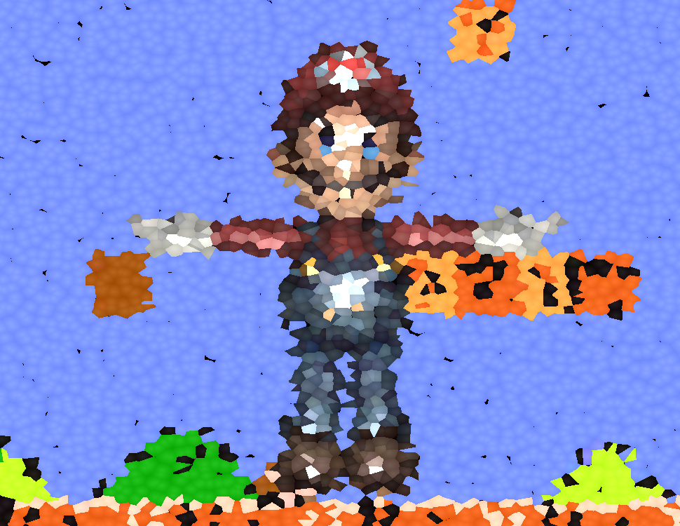
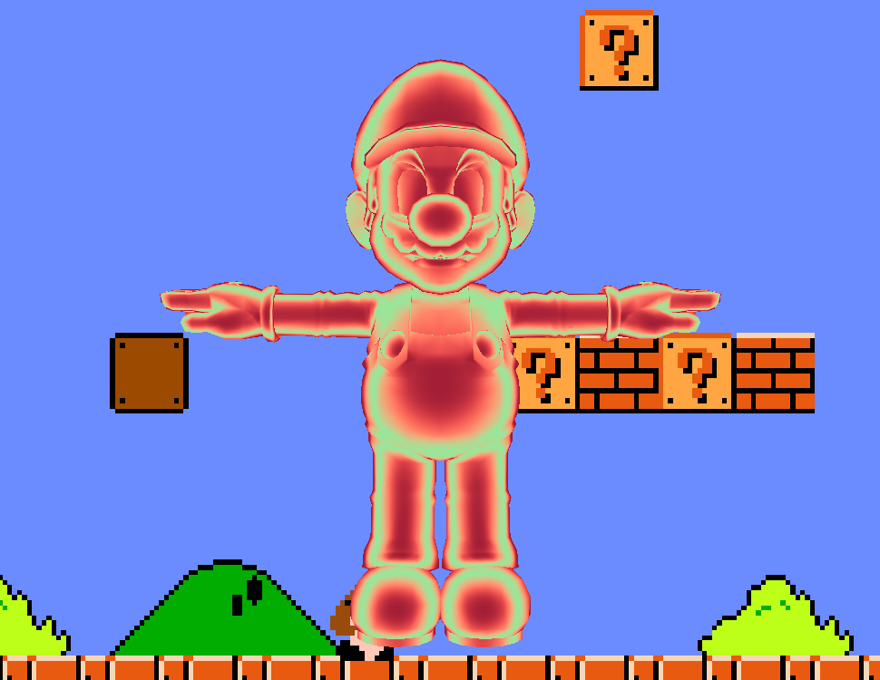
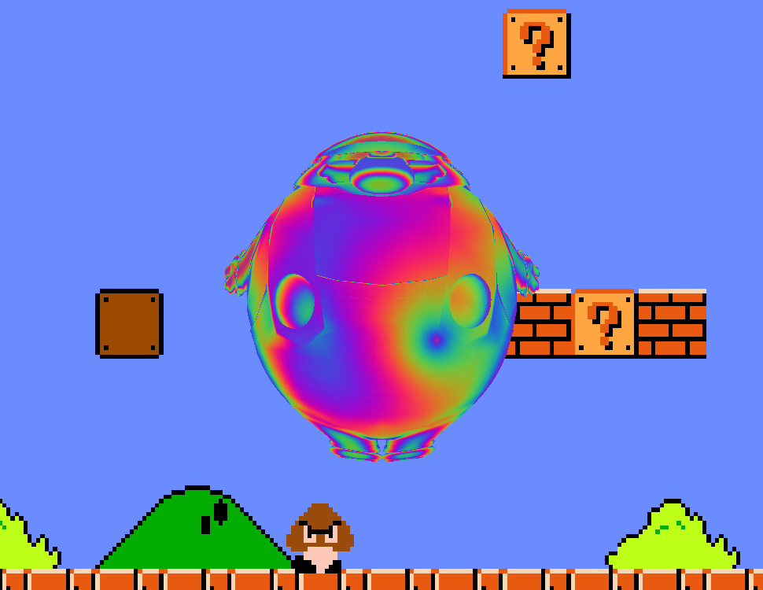

Portfolio website designed and coded using JavaScript + HTML/CSS
Daily Bread
A recipe web application that allows the user to create an account, add new recipes with directions, description, and images to a variety of categories, rate their recipes, and add recipes to a meal planner and grocery list. Designed with mockups using Photoshop and Illustrator. Developed using EJS, HTML/CSS, JavaScript, NodeJS runtime environment, Express for routing, and MongoDB for storage.
Mini Maya
A 3D editing program similar to Maya that allows the user to subdivide and extrude faces, modify vertex positions and face colors, import OBJ and JSON files, and bind skins to 3D models to create a movable skeleton. Built with OpenGL/GLSL and C++.
Shaders
Various fragment and vertex shaders to modify the appearance of a 3D model. Used Worley noise to generate vertex deformations in post-process shaders. Written with OpenGL/GLSL and C++.
 |
 |
 |
 |